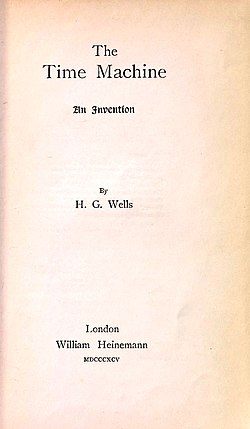

The Time Traveller (for so it will be convenient to speak of him) was expounding a recondite matter to us. His pale grey eyes shone and twinkled, and his usually pale face was flushed and animated. The fire burnt brightly, and the soft radiance of the incandescent lights in the lilies of silver caught the bubbles that flashed and passed in our glasses. Our chairs, being his patents, embraced and caressed us rather than submitted to be sat upon, and there was that luxurious after-dinner atmosphere, when thought runs gracefully free of the trammels of precision. And he put it to us in this way—marking the points with a lean forefinger—as we sat and lazily admired his earnestness over this new paradox (as we thought it) and his fecundity.
“You must follow me carefully. I shall have to controvert one or two ideas that are almost universally accepted. The geometry, for instance, they taught you at school is founded on a misconception.”
“Is not that rather a large thing to expect us to begin upon?” said Filby, an argumentative person with red hair.
“I do not mean to ask you to accept anything without reasonable ground for it. You will soon admit as much as I need from you. You know of course that a mathematical line, a line of thickness nil, has no real existence. They taught you that? Neither has a mathematical plane. These things are mere abstractions.”
